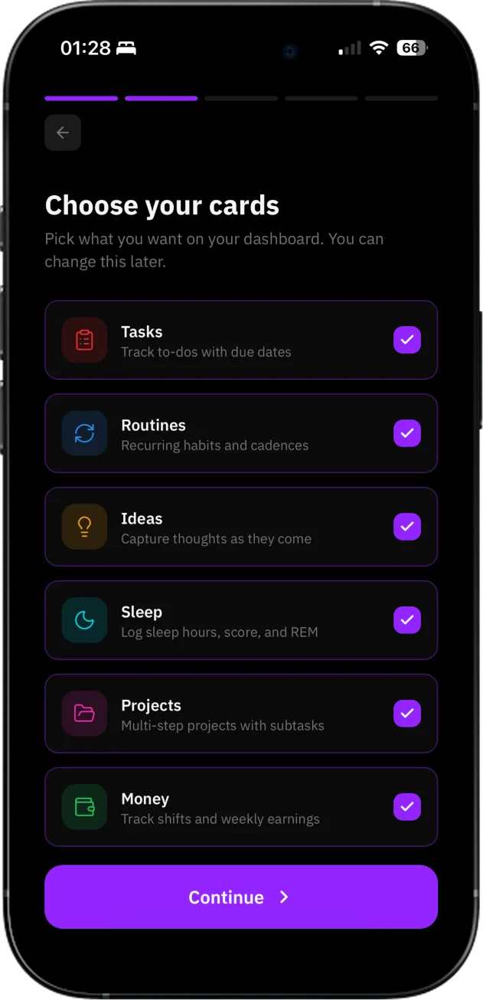
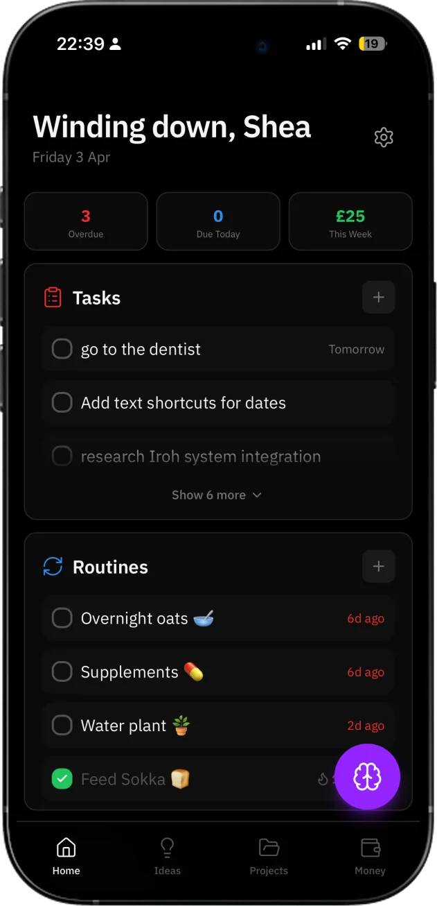
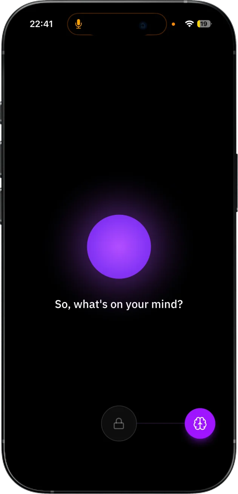
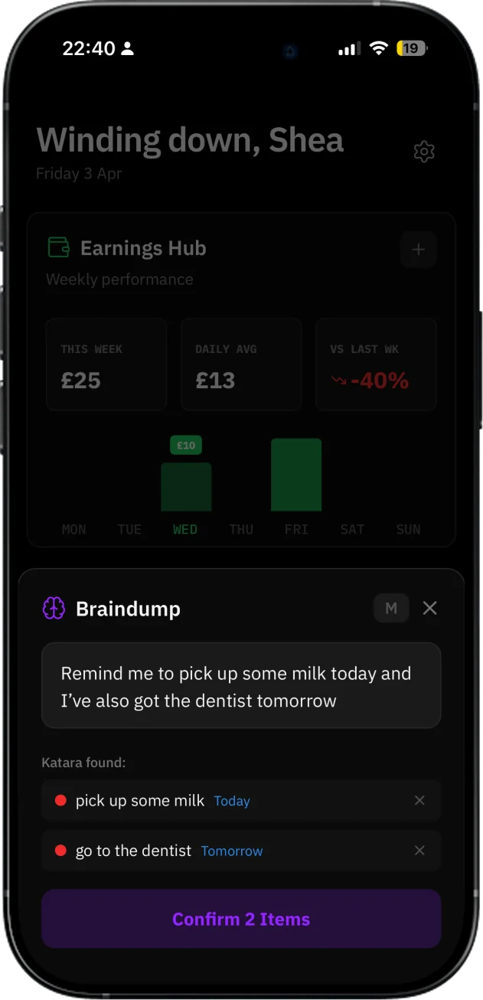

Brain Dump
Type or speak freely. AI figures out the rest.
- Type
- Personal project
- Status
- In beta
- Built with
- Next.js, TypeScript, Tailwind CSS, Supabase, Claude API, Google Auth and Vercel
Overview
I built Brain Dump because I kept losing track of things across too many apps. Type or talk, and it sorts the lot into tasks, routines, ideas and projects.
Onboarding
Your dashboard, your way
Brain Dump isn’t a fixed tool. On setup, you pick the cards that actually matter to your life: tasks, routines, ideas, projects, sleep, money. The dashboard only shows what you chose. It’s the first decision you make, and it sets the tone for how the whole app feels.

Dashboard
Everything in one place
The home screen surfaces what needs your attention: overdue tasks, what’s due today, how the week’s going. Cards stack in the order you set. The purple brain button is always one tap away. It’s designed to be the first thing you check in the morning and the last thing you update at night.

Voice mode
Just speak
Tap the brain, drag to unlock, and start talking. No typing, no formatting, no thinking about where something belongs. The interface strips back to almost nothing: a glowing orb and a question. It’s built for the moments when your hands are busy or your thoughts are moving faster than your fingers.

AI sorting
Katara does the rest
Once you’ve typed or spoken, Katara reads what you said and pulls out the tasks, dates, and intentions buried in it. You see exactly what it found, confirm what looks right, and it’s logged. No manual sorting. The thinking is done before you’ve put your phone down.

Try it yourself.
Next project
Brand, web and appConcept
Cipher
Brand guidelines, website and app for an AI-first bank.